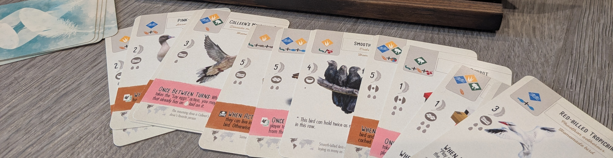
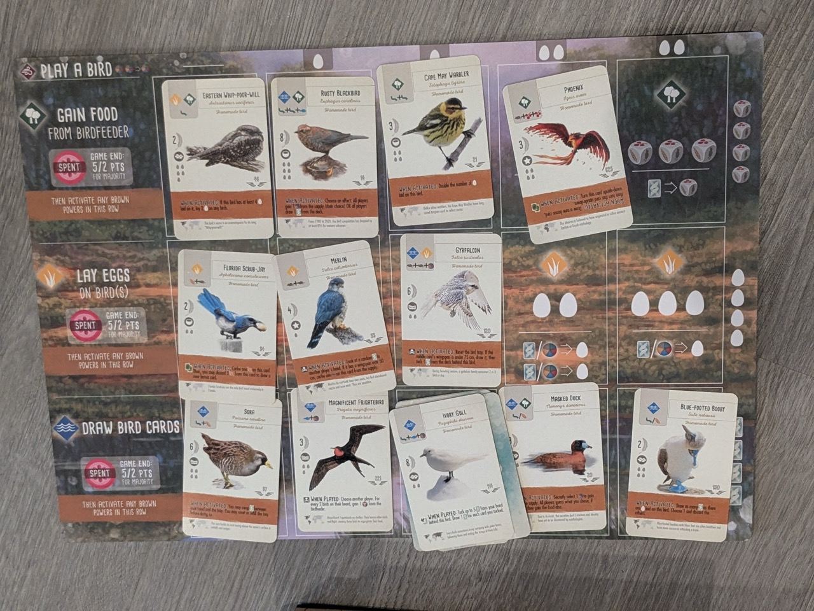

Wingspan Expansion
Wingspan is a board game with hundreds of unique birds cards, each with distinct effects and features. It also happens to be one of my favorite and most-played games, and so I decided to have a hand at designing some custom cards!

I started by brainstorming unique game effects and researching birds those effects would suit. Cards in wingspan have about 10 properties, an overlapping mix of avian information and game-related details, so I created a spreadsheet to keep track of all these variables. Have a look if you’re interested.
The spreadsheet helped me adjust the distribution of card properties. Beyond wanting my cards to vary for variety’s sake, the game has Bonus Cards that specify certain frequencies. For example, the Photographer Bonus Card states that 34% of bird cards have colors in their name, and according to the Rodentologist exactly 15% cost mice to play. My spreadsheet tracked how close I was to these percentages, which let me create the cards with these targets in mind.
Once I was happy with 41 designs, I made PDFs of the cards. I accomplished this using an online card creation tool with additional editing done with Photopea (an online image editing tool). I printed a few copies of the expansion to hand out to friends with the game. If you have the Wingspan DLC for Tabletop Simulator, you can access my cards on the Steam Workshop to try these cards virtually.